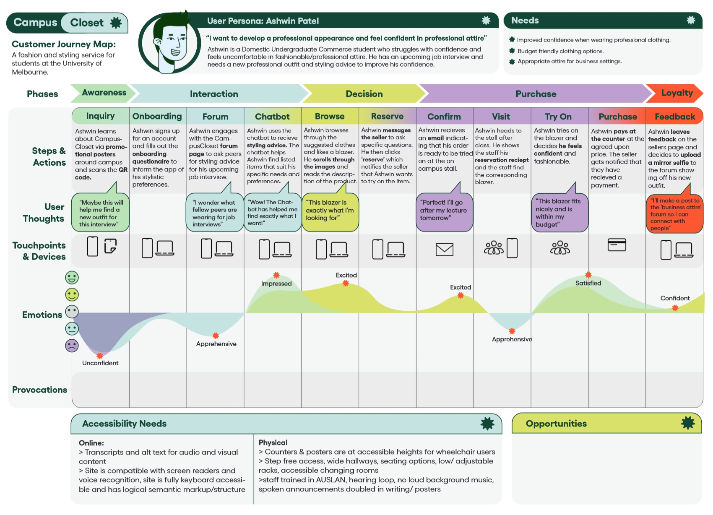

unistyle
UniStyle is a proposed service designed for the University of Melbourne Student Union. This service includes an online forum dedicated to styling and fashion advice, a clothing sales platform with both digital and in-person touchpoints, and an AI-integrated conversational agent that serves as a styling assistant. The service is intended to provide a convenient and affordable way for students to improve their style and become more confident, as well as foster social interaction. It takes into account accessibility design, particularly for students with motor and hearing disabilities.
Our group was presented with three user personas to help design our service. We identified their different needs and crafted a problem statement:
"Students encounter challenges in finding and styling affordable clothing for their careers and personal lifestyles due to their busy schedules. They are eager to be part of a community and build their social and professional confidence. They would like an outlet to express their creativity and help others by exchanging fashion tips/advice and decluttering clothes respectively."
During the design process, I primarily focused on initial ideation, crafting a user research survey, and creating several iterations of wireframes for the service's online components. I also contributed to the creation of storyboards and our conversational agent.
ideation
The group engaged in a number of brainstorming exercises to generate ideas for services that would match persona needs. Ultimately, we settled on the concept of a clothing donation service with an online forum; while some of the other ideas were promising, we wanted to narrow the scope of our service. This service idea also allowed for the online and in-person components to synergise well. It also met our criteria of being convenient, low-cost and socially engaging.


More detailed sketches for the chosen service ideas, including notes on accessibility.
prototyping
To ensure equity, we initially used a points-based system to limit the amount of clothing students could take in a week. However, after receiving peer and tutor feedback, we transitioned to a currency-based system, as it would provide more of an incentive to participate in the service. It would also be more simple for students to keep track of.


Storyboards detailing two customer interactions with the service.
I created several iterations of website wireframes for this assignment, refining them to incorporate feedback during the weekly workshops. A mobile-first design allowed us to scale up for desktop. Annotations were also used for the later wireframes to show my accessbility design considerations. I made the most changes to the layout of the navigation bar and forum section, as we received feedback about the navigation being confusing and unintuitive. To address this, several sections of the website were renamed, such as the "Community" section being changed to "Forum" to align with external models.

The earliest iteration of the prototype where I decided on the website's basic functionality.

The third iteration of the prototype, created on Figma with the A11y annotation toolkit. The layout was further opitmised for mobile navigation, and I added screens showing the clothing purchase and checkout process.
outcomes
The final high-fidelity prototypes show the culmination of the changes made across the different iterations of the site. This includes a hovering button that allows users to easily access the AI conversational agent, as well as clearer naming for different sections of the site.
The customer journey map gives an example of a standard customer interaction with the service based on the initial user person, including both digital and physical touchpoints. The shift from a points-based to currency-based model for the service can be seen in this diagram.
go back